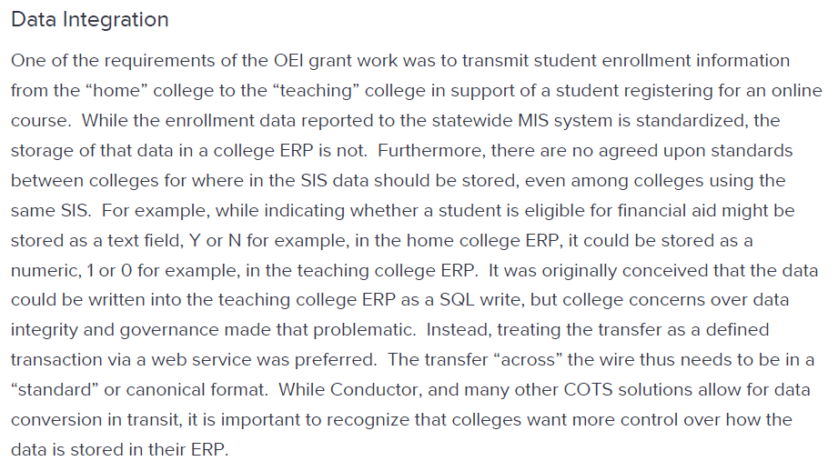

Writing Samples
Application Programmer Interface (API) Documentation
User Interface (UI) Documentation
Application Programmer Interface (API) Documentation
All of the samples below were targeted towards software developers using the Intel® oneAPI suite of complilers, libraries, and tools.
Intel® oneAPI Programming Guide Development Environment Setup
PDF Version, starting on page 15
Project
Introduce a new default installation directory for both Windows and Linux.
Context
The Environment Setup page is one of the most important parts of the Programming Guide, and it frequently changes. When the default installation directory changed, users who accept default directories would need to customize configuration files, point scripts to the new location for libraries and compilers, and alter their PATH.
Achievements
informed users of advantages of the new layout
increased usability for users by describing configuration options
engineering verified content was accurate
validation verified that procedures were accurate
updated 180 documents to mention this section and point users to this section for more information
Technical Details
Source files: reStructuredText
Repository: internal GitHub repository
Transformation: Sphinx to DITA (sphinx2dita)
Web Platform: Adobe Experience Manager (AEM)
How to use CMake with Intel® oneAPI Toolkits
Project
Explain how users can configure CMake to automatically trigger configuration options.
Context
With the December 2023 release, configuration options changed so that users had options when configuring their systems. I worked with a developer to write this article, publish, and promote the article.
Achievements
educated users on new configuration options using CMake
reduced duplicate text in multiple documents by pointing users to this article when dealing with CMake options
Technical Details
Source file: AEM article
Repository: AEM article editor
Web Platform: Adobe Experience Manager (AEM)
Get Started with the Intel® oneAPI Base Toolkit for Linux
Project
Provide a quick path for users to be able to verify installation, configure their system, and run a sample.
Context
I originally created this for the first beta release of the Intel® oneAPI Base Toolkit. I worked with the Developer Experience team to run user studies to improve the get started experience both from a technical standpoint and from a documentation standpoint. The 2024.0 version was the last version I worked on, after two years of quarterly releases.
Achievements
improved user success in user studies by more than 40 percent
directed users to troubleshooting steps when commands produced error messages
integrated installed samples with GitHub samples to enable users to experiment with different functions
Technical Details
Source files: DITA XML
Repository: SDL Trisoft Publication Manager
Transformation: SDL publication to DITA XML
Web Platform: Adobe Experience Manager (AEM)
Database Documentation
Data Warehouse Direct Access User Guide
Project
Colleges in the California Community College system can view and share data through a data warehouse managed by the Califonria Community College Technology Center. Colleges have the option of using a reporting interface managed by the Technology Center, or with a direct connection using ODBC or JDBC. This guide tells them how to make that connection.
Context
This document had not had a major update in more than a year, and had never gone through a review. My task was to update the document for accuracy and usability.
Achievements
Updated technical accuracy by testing the system and working with developers and end users to verify which technologies were still in use and add in technologies and features that had been implemented but were not documented.
Increased readability and usability by utilizing bullet lists, tables, and figures to explain technical concepts instead of relying on long blocks of text. One example is shown below:
Original

Revised
Technical Details
Source files: Atlassian Confluence Wiki pages
Web Platform: Atlassian
Project
The California Community College Technology Center created a combination of technologies called SuperGlue to assist colleges in the usage and maintenance of their databases through:
application integration
service orchestration
API management
data integration
The document Introduction to SuperGlue is intended to give IT professionals an overview of how SuperGlue is integrated into the California Community College system, as well as provide context on how it is funded and explain historical decisions that led to the technologies that are currently implemented.
Context
This document had not been updated in more than four years and was full of inconsistencies and inaccuracies. My task was to bring the document up to date and improve readability and usability.
Achievements
Updated technical accuracy by researching current technogogies in Bitbucket, Jira, and Confluence. Then, I worked with developers and data architects to verify the new content that I found in my research.
Increased readability and usability by utilizing bullet lists, tables, and figures to explain technical concepts instead of relying on long blocks of text. One example is shown below:
Original
Revised
Technical Details
Source files: Atlassian Confluence Wiki pages
Web Platform: Atlassian
User Interface (UI) Documentation
Get Started with the Intel® oneAPI Base Toolkit for Windows
Project
Provide a quick path for users to be able to verify installation, configure their system, and run a sample.
Context
I originally created this for the first beta release of the Intel® oneAPI Base Toolkit. I worked with the Developer Experience team to run user studies to improve the get started experience both from a technical standpoint and from a documentation standpoint. The 2024.0 version was the last version I worked on, after two years of quarterly releases.
Achievements
improved user success for configuration in user studies by more than 40 percent
directed users to troubleshooting steps when the UI produced error messages
integrated installed samples with GitHub samples to enable users to experiment with different functions
Technical Details
Source files: DITA XML
Repository: SDL Trisoft Publication Manager
Transformation: SDL publication to DITA XML
Web Platform: Adobe Experience Manager (AEM)
Using Visual Studio Code with Intel® oneAPI Toolkits User Guide
Project
Improve usability and adoption for developers by creating Visual Studio Code (VS Code) extensions that enhance development with Intel oneAPI components.
Context
User feedback indicated that VS Code was the most popular interface for coding on the DPC++ and SYCL platforms. The development team created extensions for enhancing the user experience, and I worked on a a guide for how to install, configure, and use the extensions for a better user experience.
Achievements
more than 85,000 downloads, with an average rating of 4.6 stars
improved user success for running samples in user studies by more than 25 percent
Technical Details
Source files: reStructuredText
Repository: internal GitHub repository
Transformation: Sphinx to DITA (sphinx2dita)
Web Platform: Adobe Experience Manager (AEM)